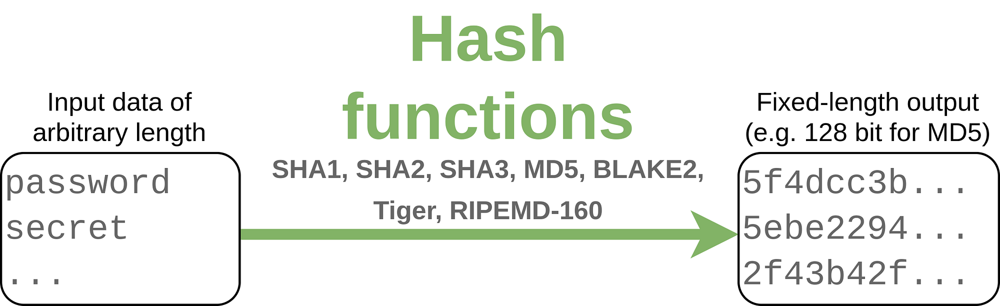
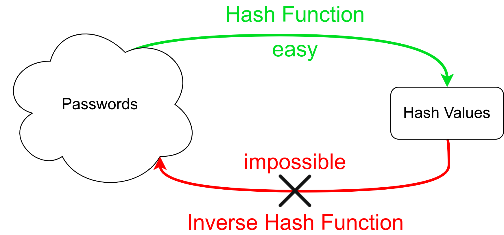

{kind=link}

Hash functions take arbitrarily many bytes as input and produce a fixed-length string as output. The string typically looks completely random, but the same input always generates the same output. They also typically produce different outputs for different inputs, but more about that later.
After reading this article, you will know three different applications of hash functions. All of them are crucial for modern software development. Let’s go!
A trivial hash function
Let’s say we want a hash function that takes arbitrary length input and generates a 128-bit output.
The trivial way to compute a hash would be to look at 128-bit blocks of data. If the input is not a multiple of 128 bit, we just pad it with zeroes. Then we XOR the blocks:
This is just one very simple example of a hash function. It has two nice properties: It’s very fast to execute and very simple.
The disadvantages are also very clear:
- It’s trivial to enforce a certain hash value by changing the input
- If you’re using the hash function for error checking, you will not be able to capture an even amount of errors at the same location modulo the hash length. So if you have an error at bit 127 and 255 the hash will be the same as without an error.
- The hash value of short inputs (below the length of the hash) is just the padded input. You can directly read it.
Application 1: Passwords
When you register at a website, you typically have to enter a password. But the website could get hacked and an attacker could get your password. To protect users, the passwords are not stored in plain text. They are also not encrypted. Instead, they are hashed. This means we apply a one-way function to them. A typical example of a hashing function is MD5. In Python you can apply it like this:
# IMPORTANT: DO NOT USE MD5 FOR PASSWORDS!
>>> import hashlib
>>> hashlib.md5(b"unicorn").hexdigest()
'1abcb33beeb811dca15f0ac3e47b88d9'
>>> hashlib.md5(b"unicorns").hexdigest()
'02d8c4ac323c5df679077f020f170453'
You can see two key properties here: (1) The length of the input does not matter; the length of the output is constant and (2) different inputs map to different outputs.
What you cannot see is the one-way nature of hash functions:
{kind=link}

Computing the hash value of a given password is comparatively fast and deterministic. Given the hash value, it is impossible to know for sure the original password. The reason for this is collisions: Passwords can be arbitrarily long, but the hash values have a fixed length. This means there must be some (different) passwords that have the same hash value. It’s just super unlikely for good hash functions.
Typically the best option to find a password with a given hash value is to just try every possible password until you see the same hash value:
def inverse_hash(hashed_password):
for password in generate_new_password():
if hash(password) == hashed_password:
return password
This is way harder than computing the hash value. For randomly generated passwords it is likely that you have to try billions of passwords until you happen to find one that has the correct hash.
Cryptographic hash functions are hash functions, but not all hash functions are cryptographic hash functions. The additional properties you want for cryptographic hash functions are:
- Pre-image attack resistance: Given
hash(m1)it is infeasible to findm1. - Avalanche effect: If you change a single bit in the input, each bit in the output changes with 50% probability. This property is desirable because it indicates that you don’t get any information about the pre-image.
- Collision attack resistance: It is infeasible to find two messages m1 and m2
that have the same hash value:
hash(m1) == hash(m2). - Chosen-prefix attack resistance: This is more general than the collision
attack resistance. Given two prefixes p1 and p2 find two messages m1 and m2 such
that their concatenation gives the same hash:
hash(p1+m1) == hash(p2+m2)(source)
If an attacker wants to apply an inverse_hash like given above, you want to
make this a super time-intensive operation. Hence you push the execution time
from maybe 100μs to 100ms by applying the hash function 1000 times.
For more details, read my article about password hashing: Password Hashing 😇 Prepare to get hacked
Application 2: Integrity Checks
Sometimes you just want to know if two files could possibly be identical. For example, you might want to create a program that scans a directory and all subdirectories for duplicate files:
import hashlib
from collections import defaultdict
from pathlib import Path
from typing import List
def find_duplicates(directory: Path) -> List[List[Path]]:
fingerprint2paths = defaultdict(list)
for path in directory.glob("**/*"):
if not path.is_file():
continue
fingerprint = get_fingerprint(path)
fingerprint2paths[fingerprint].append(path)
return [paths for paths in fingerprint2paths.values() if len(paths) > 1]
def get_fingerprint(path: Path) -> str:
hash_md5 = hashlib.md5()
with open(path, "rb") as f:
for chunk in iter(lambda: f.read(4096), b""):
hash_md5.update(chunk)
return hash_md5.hexdigest()
for duplicate_set in find_duplicates(Path(".")):
print(duplicate_set)
In this application, we use the fact that two different hash values typically
mean the input was different. Hash collisions are rare. You could then also
compare the files in the duplicate_set to make sure they are actually
duplicates.
This method can also be used to ensure file integrity. Think of big files you’ve downloaded. You can check if something went wrong during the download by calculating the checksum of the file you have downloaded against a checksum of the file which is online.
Application 3: Proof-of-Work in Blockchain
Bitcoin and various other blockchains use a concept called “proof of work”. It is important for those technologies to be able to prove that you’ve put a certain amount of computational resources into a problem. It needs to be hard to solve that problem, but easy to generate problem instances. A common choice for proof of work is to use a cryptographic hash function and ask for an input that generates a hash value with a certain pattern. For example:
Find a string x such that y := sha256(x) and y begins with 0000
The more restricted this pattern is, the harder it becomes to solve this task. Hence the more work you have to put into it.
Here is a short program that solves such a task:
import hashlib
import itertools
import time
from typing import Iterator, Tuple
def find_hash(start: str = "00") -> Tuple[str, int]:
nb_probed = 0
for probe in generate_random_str():
nb_probed += 1
hashval = hashlib.sha256(bytes(probe, "utf8"))
if hashval.hexdigest().startswith(start):
return probe, nb_probed
def generate_random_str(length: int = 4) -> Iterator[str]:
abc = "abcdefghijklmnopqrstuvwxyz"
chars = list(abc + abc.upper() + "0123456789" + ' !"§$%&/()=?+-')
while True:
print(f"Length={length}")
for string in itertools.product(chars, repeat=length):
random_str = "".join(string)
yield random_str
length += 1
t0 = time.time()
probe, nb_probed = find_hash("0000")
t1 = time.time()
hashval = hashlib.sha256(bytes(probe, "utf8")).hexdigest()
print(f"{probe=}; {hashval=}; nb_probed={nb_probed:,}")
If you want to get more context about how the proof of work is used in Blockchain, have a look at my introductory article: The Blockchain An Introduction to Blockchain, Bitcoin ₿, and related concepts
Bonus: Dictionaries / Maps / Associative Arrays
A hash map is a data structure that typically maps a string or a number to any object. They are called dictionaries in Python, associative arrays in PHP, HashMap/HashTable in Java, and std::unordered_map in C++. The concept is super cool; have a look at the Wikipedia article.
If you’re interested in how Python does it, then Praveen Gollakota wrote an awesome Stack Overflow answer and Ian Clelland explains which hash functions are used by default.
How common are collisions?
For this example, let’s just hash 466,550 English words. A pretty comprehensive dictionary.
Let’s first get the overview:
Hash function collisions ns/value bits
-------------------------------------------------------------------
sha512 0 1250.0 ns/value 512 bit
sha256 0 1039.0 ns/value 256 bit
sha1 0 884.0 ns/value 160 bit
RIPEMD160 0 13892.7 ns/value 160 bit
md5 0 857.8 ns/value 128 bit
crc32 23 596.3 ns/value 32 bit
adler32 227,149 660.9 ns/value 32 bit
char_xor 466,422 993.9 ns/value 7 bit
A couple of things are noteworthy here:
- The hashes with 128 bits or more did not have any collision. The char_xor effectively only uses 7 bit and thus can only encode a maximum of 128 different words.
- RIPEMD160 is way slower than the SHA hash functions. It’s very likely that the Intel SHA extensions, hence direct hardware support, are the reason why those are so fast. SHA is extremely well-known and widespread. For this reason, I expect the implementation to be very efficient.
In case you’re curious, here are the 23 collisions of CRC32:
('Audras', 'bermensch')
('defeudalize', 'demobilisation')
('dyn', 'gigmanism')
('gigmaness', 'hyp')
('Endamoebidae', 'Ilysa')
('card-cutting', 'intertwinements')
('eminency', 'Kelcie')
('drift-netter', 'lattermath')
('meny', 'menthols')
('funerary', 'morenosite')
('envoyship', 'platycarpous')
('buckeroo', 'plumless')
('fetishists', 'precedential')
('penetration', 'prepituitary')
('death-polluted', 'rabbitoh')
('Bridget', 'slagging')
('bimasty', 'superspecial')
('droopingness', 'thalloid')
('coach-box', 'tythed')
('luminesce', 'twice-given')
('casewood', 'uncontorted')
('bronziest', 'unexigible')
('pachadoms', 'wind-changing')
More in this series
This article is part of my series about Blockchain:
- Part 1: An Introduction to Blockchain
- Part 2: The 3 Applications of Hash Functions
- Part 3: Merkle Trees
Topics I will consider next:
- Merkle Patricia Tries
- Public-Key Cryptography and RSA: Public- and private keys, Digital Signatures, Trapdoor functions. What it is and why it’s so important
- Proof of Work: How it works, how difficult it is, and what Bitcoin / Ether / Stellar use.
- Smart contracts: What they are and how they work; e.g. with Ethereum as an example
- Initial Coin Offering (ICO)
- Bitcoin's consensus algorithm
- Bitcoin and the network: How do people connect?
- Bitcoin Wallets
- Peer-To-Peer Stuff: How Gossip Protocols work
Let me know what you’re interested in!